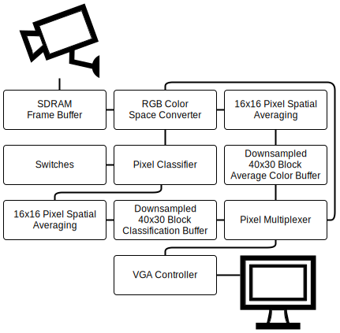
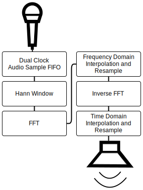

Introduction
Imagine you’re a criminal and you’ve just abducted a wealthy individual, but now you need to make a video to express your demands for ransom. Obviously you’d like to conceal your identity in said video but you’re a busy kidnapper and you don’t have time for video production and the post processing involved. This is where our anonymizer comes in. Using the technology we’ve developed, you can record a video that automatically blurs your face and disguises your voice as you record. No post processing necessary.
In seriousness, our project idea was born from a problem familiar to all graduate students: maximizing free food consumption. The department regularly leaves leftover seminar food in the PhD kitchen, but the students prefer not to constantly check the kitchen for free food. A mailing list called CS Vultures was created to alert all of the hungry graduate students to availability of free food. However, not everyone participated in the mailing list, so a more automated solution was desired. The idea of placing a live streaming camera in the kitchen was proposed, but it was quickly shot down by the administration due to university policy issues and privacy concerns.
Our project solves the problem of privacy concern with live-streaming by automatically detecting the faces on the screen and blurring them out in real time. The automated nature and speed are what set our approach apart from the standard workflow of post-processing videos to blur out contents.
If you're using the GitHub for Mac, simply sync your repository and you'll see the new branch.
High level design
We've crafted some handsome templates for you to use. Go ahead and continue to layouts to browse through them. You can easily go back to edit your page before publishing. After publishing your page, you can revisit the page generator and switch to another theme. Your Page content will be preserved if it remained markdown format.
Hardware design
The entire project is implemented entirely in hardware, there is no CPU and no software. The trickiest part of this project was the audio, mostly because of the need to figure out the Altera FFT module, and debugging the timing of the pipeline as well as fixed point overflow issues.
The video is shown in the RTL diagram below. 
The audio pipeline is depicted in the RTL diagram below. 
Results
The video processing is fast enough so that no artifacts are visible on the screen. The skin detection updating is also fast enough that we are not able to move our faces fast enough to escape the blur effect. Once the skin detection threshold is properly tuned for the lighting conditions, it is very accurate.
The audio processing is pipelined so that we can run both the inverse FFT for one stage and the FFT for the next stage simultaenously. The FFT and inverse FFT modules are each implemented as four parallel quad-output FFTs. The FFT runs in approximately 500 cycles at 50MHZ, and our audio sample rate is 48KHZ. Ultimately, the ability to do so much of the computation in parallel on the FPGA makes it possible to run the entire audio pipeline in one audio sample period.
Conclusions
The video pixelator design works very well, and exceeded our expectations. Once tuned properly for lighting conditions, the blur effect is surprisingly accurate and robust.
While it is fast enough, our audio processing pipeline didn’t quite live up to our expectations based on our matlab model of the phase vocoder. We were able to get a Donald Duck-like effect for the voice, but there are some noticeable artifacts in the output. Our plan is to make the phase vocoder adjustable so that we can raise or lower the pitch of the input voice and fix the artifacts.
Intellectual Property
We based our initial design on a previous year project [PROJECT LINK], which was in turn based on the Altera TV example and Bruce Land’s VGA controller and averaging module. We used the FFT, PLL and SDRAM controller from Altera’s megafunction collection.